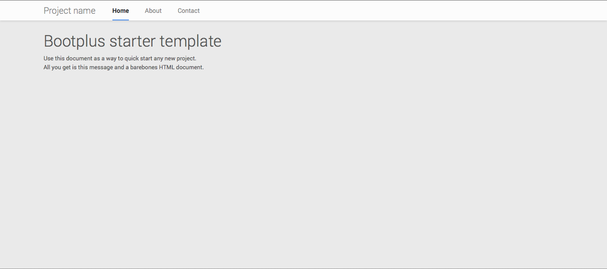
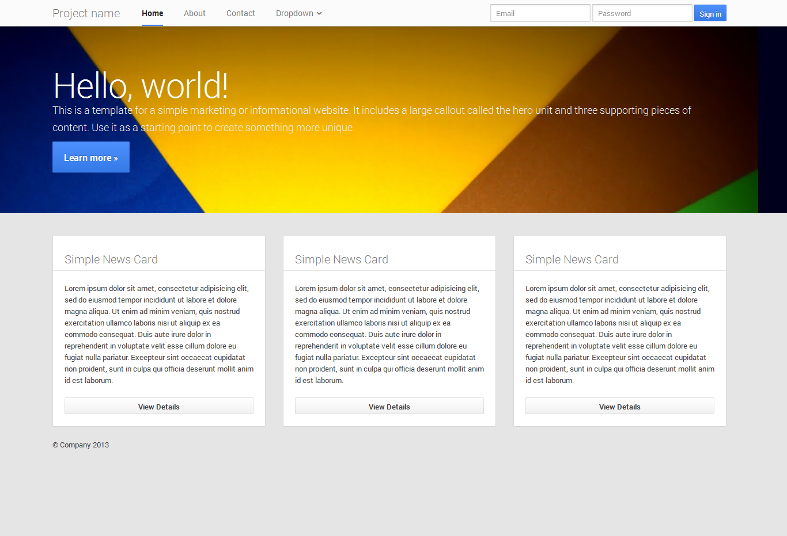
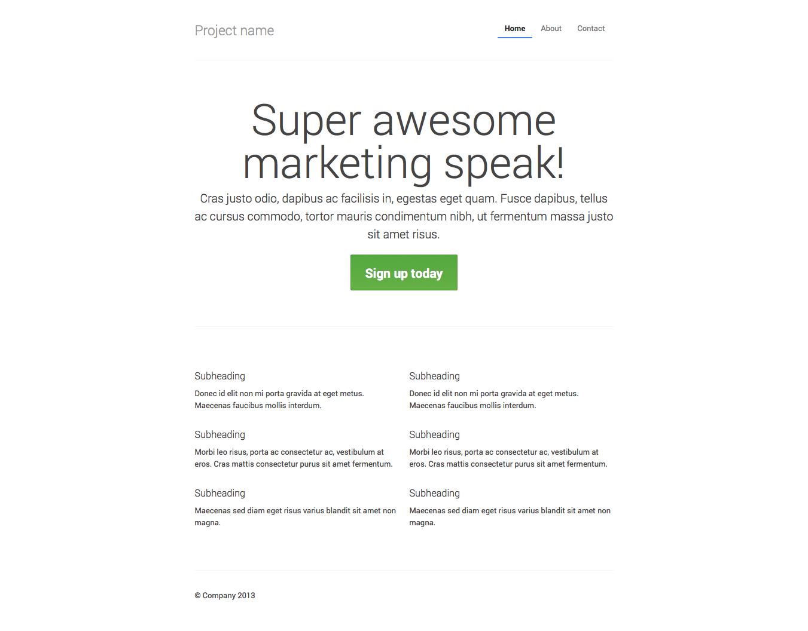
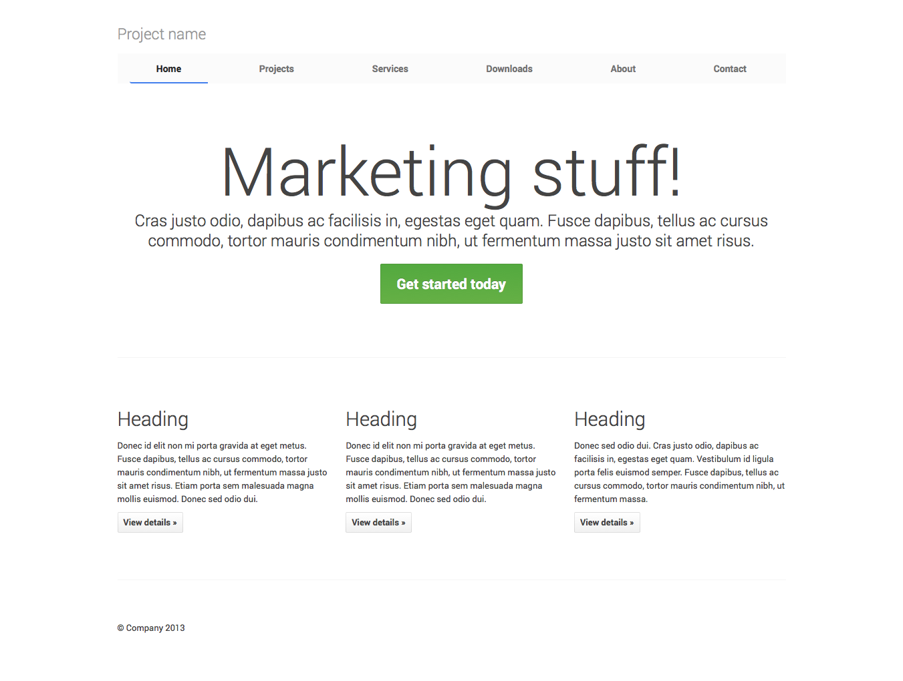
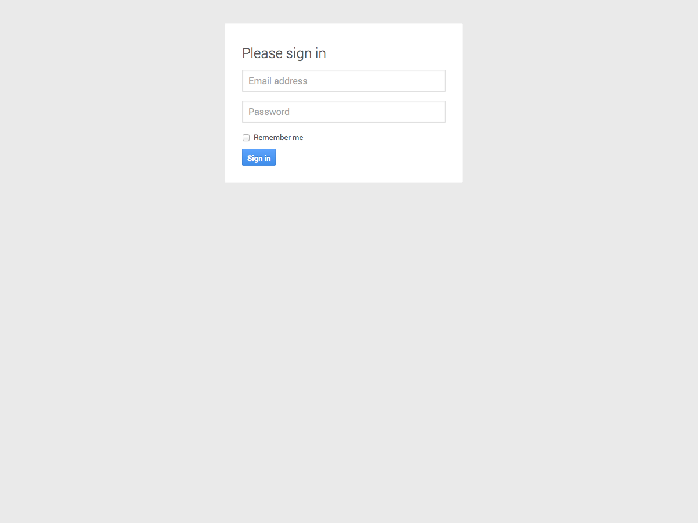
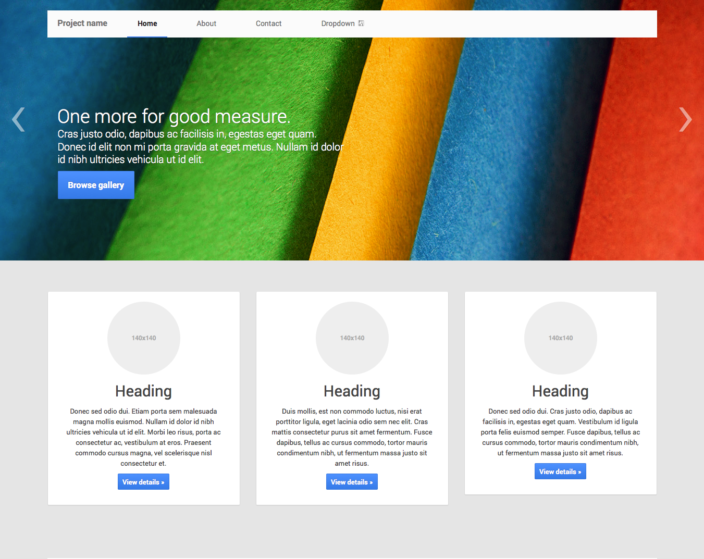

1. Download
Before downloading, be sure to have a code editor (we recommend Sublime Text 2) and some working knowledge of HTML and CSS. We won't walk through the source files here, but they are available for download. We'll focus on getting started with the compiled Bootplus files.
Download compiled
Fastest way to get started: get the compiled and minified versions of our CSS, JS, and images. No docs or original source files.
Download source
Get the original files for all CSS and JavaScript, along with a local copy of the docs by downloading the latest version directly from GitHub.
2. File structure
Within the download you'll find the following file structure and contents, logically grouping common assets and providing both compiled and minified variations.
Once downloaded, unzip the compressed folder to see the structure of (the compiled) Bootplus. You'll see something like this:
bootplus/
├── css/
│ ├── bootplus.css
│ ├── bootplus.min.css
│ ├── bootplus-responsive.css
│ ├── bootplus-responsive.min.css
│ ├── font-awesome.min.css
│ ├── font-awesome.min-ie7.min.css
├── font/
│ ├── fontawesome-webfont.eot
│ ├── fontawesome-webfont.svg
│ ├── fontawesome-webfont.ttf
│ ├── fontawesome-webfont.woff
│ └── FontAwesome.otf
└── js/
├── bootstrap.js
├── bootstrap.min.js
This is the most basic form of Bootplus: compiled files for quick drop-in usage in nearly any web project. We provide compiled CSS and the original Bootstrap JS (bootstrap.*), as well as compiled and minified CSS and JS (bootstrap.min.*). The image files are compressed using ImageOptim, a Mac app for compressing PNGs.
Please note that all JavaScript plugins require jQuery to be included.
3. What's included
Bootplus comes equipped with HTML, CSS, and JS for all sorts of things, but they can be summarized with a handful of categories visible at the top of the Bootstrap documentation.
Docs sections
Scaffolding
Global styles for the body to reset type and background, link styles, grid system, and two simple layouts.
Base CSS
Styles for common HTML elements like typography, code, tables, forms, and buttons. Also includes Glyphicons, a great little icon set.
Components
Basic styles for common interface components like tabs and pills, navbar, alerts, page headers, and more.
Plus
Special components similar to the ones you can find on Google+ pages, like cards and custom dialogs.
JavaScript plugins
Similar to Components, these JavaScript plugins are interactive components for things like tooltips, popovers, modals, and more.
List of components
Together, the Components and JavaScript plugins sections provide the following interface elements:
- Button groups
- Button dropdowns
- Navigational tabs, pills, and lists
- Navbar
- Labels
- Badges
- Page headers and hero unit
- Thumbnails
- Alerts
- Progress bars
- Modals
- Dropdowns
- Tooltips
- Popovers
- Accordion
- Carousel
- Typeahead
- News Cards
- People Cards
In future guides, we may walk through these components individually in more detail. Until then, look for each of these in the documentation for information on how to utilize and customize them.
4. Basic HTML template
With a brief intro into the contents out of the way, we can focus on putting Bootstrap to use. To do that, we'll utilize a basic HTML template that includes everything we mentioned in the File structure.
Now, here's a look at a typical HTML file:
<!DOCTYPE html>
<html>
<head>
<title>Bootplus 101 Template</title>
<meta name="viewport" content="width=device-width, initial-scale=1.0">
</head>
<body>
<h1>Hello, world!</h1>
<script src="http://code.jquery.com/jquery.js"></script>
</body>
</html>
To make this a Bootplus template, just include the appropriate CSS and JS files:
<!DOCTYPE html>
<html>
<head>
<title>Bootplus 101 Template</title>
<meta name="viewport" content="width=device-width, initial-scale=1.0">
<!-- Bootplus -->
<link href="css/bootplus.min.css" rel="stylesheet" media="screen">
<link href="css/bootplus-responsive.min.css" rel="stylesheet" media="screen">
<!--[if IE 7]>
<link rel="stylesheet" href="css/bootplus-ie7.min.css">
<![endif]-->
</head>
<body>
<h1>Hello, world!</h1>
<script src="http://code.jquery.com/jquery.js"></script>
<script src="js/bootstrap.min.js"></script>
</body>
</html>
Note! bootplus-responsive.min.css is required only if you want your site to be responsive through many devices adapting its content.
Note! bootplus-ie7.min.css is optional, it is required only if you want to use make the Font-Awesome icons comaptibles with old browser (IE7-8).
And you're set! With those two files added, you can begin to develop any site or application with Bootplus.
5. Examples
Move beyond the base template with a few example layouts. We encourage folks to iterate on these examples and not simply use them as an end result.
-

Starter template
A barebones HTML document with all the Bootstrap CSS and JavaScript included.
-

Basic marketing site
Featuring a hero unit for a primary message and three supporting elements.
-

Fluid layout
Uses our new responsive, fluid grid system to create a seamless liquid layout.
-

Narrow marketing
Slim, lightweight marketing template for small projects or teams.
-

Justified nav
Marketing page with equal-width navigation links in a modified navbar.
-

Sign in
Barebones sign in form with custom, larger form controls and a flexible layout.
-

Sticky footer
Pin a fixed-height footer to the bottom of the user's viewport.
-

Carousel jumbotron
A more interactive riff on the basic marketing site featuring a prominent carousel.